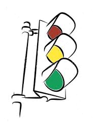

Implement the methods for the TrafficLight1 class (shown below with specs) Pleace method implementations on the provided second page Note:
|
 |
Name: Name: One CM: |
#pragma once
class TrafficLight1
//! is modeled by (
//! red: Boolean
//! yellow: Boolean
//! green: Boolean
//! )
//! exemplar self
//! constraint self.red xor self.yellow xor self.green
{
public: // Standard Operations
TrafficLight1();
//! replaces self
//! ensures: self = (true,false,false)
~TrafficLight1();
void clear(void);
//! clears self
void transferFrom(TrafficLight1& source);
//! replaces self
//! clears source
//! ensures: self = #source
TrafficLight1& operator = (TrafficLight1& rhs);
//! replaces self
//! restores rhs
//! ensures: self = rhs
// TrafficLight1 Specific Operations
void changeState(void);
//! updates self
//! ensures: (#self.red and !self.red and !self.yellow and self.green) or
//! (#self.yellow and self.red and !self.yellow and !self.green) or
//! (#self.green and !self.red and self.yellow and !self.green)
void getState(Boolean& red, Boolean& yellow, Boolean& green);
//! restores self
//! ensures: red = self.red and yellow = self.yellow and green = self.yellow
friend wostream& operator<< (wostream& os, TrafficLight1& t);
//! updates os
//! restores t
private: // Representation
Integer state;
};